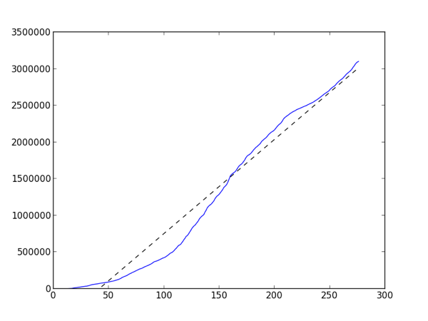

To Infinity and Beyond

We passed 3 million entries in our log data for InteractivePython.org which got me to wondering about how we are growing. The site has been live for 275 days. You can really see how the site took off after day 100, which makes sense because that was bout the time fall classes started around the country. The tiny plateau between day 225 and 250 corresponds to Christmas/winter break for most schools, and now that Spring semester is in full swing it looks like the slope has gotten steeper again.
The dotted line is the linear best fit line with a slope of 12,836.7. Even if our log database is not growing exponentially thats an impressively steep slope.
And just because this is all about Python and education, here's the Python code that created the graph. I love matplotlib, it is such a powerful tool for quickly looking at your data.
import matplotlib.pyplot as plt
from numpy import polyfit, arange
f = open('bydate','r')
days = f.readlines()
totals = [0]
for d in days:
day,count = d.split('|')
count = int(count)
totals.append(totals[-1]+count)
x = arange(len(totals))
m,b = polyfit(x,totals,1)
print m
plt.plot(x,totals,x,m*x+b, '--k')
plt.ylim(ymin=0)
plt.show()
The data file is simple. One day per line with the date in one column and the number of actions in the other column. Here are the last few days:
2013-02-14 | 24349 2013-02-15 | 17396 2013-02-16 | 12645
Comments